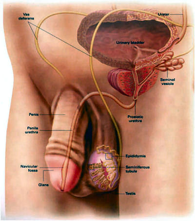

What is Prostate Gland?
The prostate gland sits underneath the bladder and is continuous with the urethra, which is the tube inside the penis through which urine flows.
The prostate gland sits underneath the bladder and is continuous with the urethra, which is the tube inside the penis through which urine flows. [picture 1 opposite] Sperm are produced in the testicles and travel up the vas, which travels through the groin, behind the bladder to reach the prostate gland. Seminal vesicles are located at the back of the prostate gland beside the vas. They produce seminal fluid which carry the sperm from the vas through the prostate and out the penis when a man ejaculates.
The prostate gland has a distribution of channels similar to a tree with numerous glands (leaves) that produce fluid which travel along tubes (branches) and is mixed with the sperm and fluid from the seminal vesicles. This is the fluid in the ejaculation that comes out of the penis.
The prostate gland has a distribution of channels similar to a tree with numerous glands (leaves) that produce fluid which travel along tubes (branches) and is mixed with the sperm and fluid from the seminal vesicles. This is the fluid in the ejaculation that comes out of the penis.